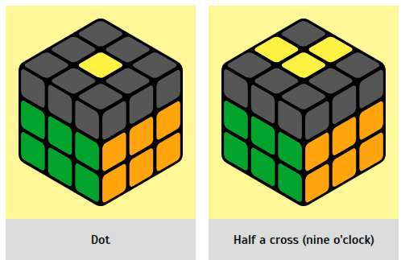

Step 4. Assembling the last layer of the Rubik's cube
|  |
Yellow cross
We have almost assembled the cube. There is just a little bit left. At this
stage, we turn the cube over again with the yellow color facing up. The sequence for creating a
yellow cross is as follows: dot → half a cross (nine o'clock) → stick → cross You may already
have a whole cross assembled on your cube. But you are not always so lucky. Sometimes you still
get one sad dot, which needs to be gradually transformed into a cross.
|